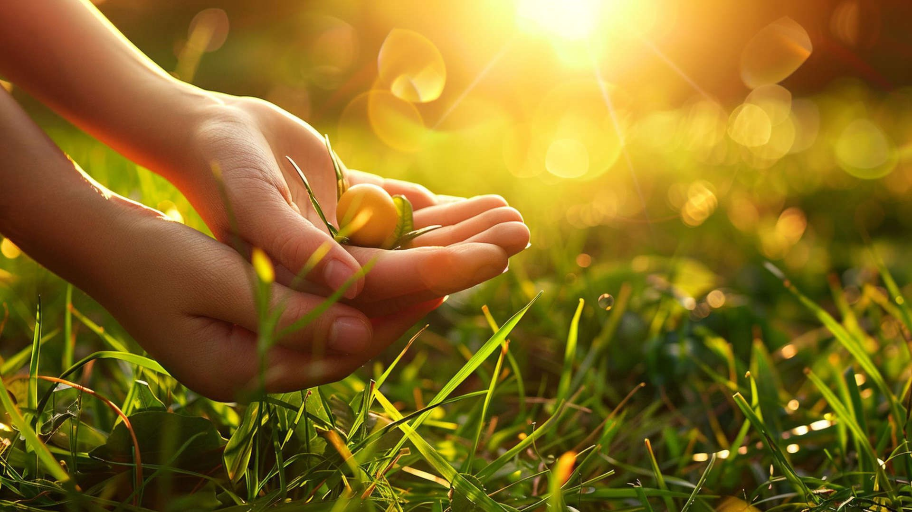

Hogyan segíthetünk a környezetvédelemben?
Az egyéni döntések is fontos szerepet játszanak a környezet védelmében. Már azzal is sokat tehetünk, ha csökkentjük az energiafogyasztásunkat, például energiatakarékos izzók használatával vagy az elektromos berendezések kikapcsolásával, amikor épp nincs rájuk szükség. A közlekedésben is érdemes tudatosabbnak lenni: ha tehetjük, válasszuk a gyaloglást, kerékpározást vagy a tömegközlekedést az autó helyett. Emellett fontos, hogy lehetőség szerint helyi, szezonális és környezetbarát termékeket vásároljunk, amelyek előállítása kisebb ökológiai lábnyommal jár.
A tudatosság kulcsfontosságú. Minél többen ismerjük fel a környezetvédelmi problémák súlyosságát, annál nagyobb eséllyel tudunk valódi változást elérni – akár a mindennapi életünk során, akár közösségi vagy politikai szinten. Az iskolákban, munkahelyeken vagy a médián keresztül terjesztett környezeti nevelés hozzájárul ahhoz, hogy az emberek jobban megértsék a természet megóvásának fontosságát és a saját felelősségüket ebben a folyamatban.
A közösségi szintű együttműködés is kiemelkedő jelentőségű. A helyi és globális környezetvédelmi szervezetek támogatása – például önkéntes munka, adományozás vagy információmegosztás formájában – hatékonyan hozzájárulhat a természetvédelemhez. Emellett érdemes részt venni környezetvédelmi akciókban, például szemétszedési napokon, faültetési programokban vagy ismeretterjesztő rendezvényeken. Ezek nemcsak a környezetet szolgálják, hanem közösségépítő hatással is bírnak.
Az oktatás és a példamutatás szintén kulcsfontosságú. Ha a fiatalabb generációt környezettudatos gondolkodásra neveljük, hosszú távon is fenntarthatóbb jövőt biztosíthatunk. Otthon is példát mutathatunk: a hulladék szelektív gyűjtésével, a víz- és energiatakarékossággal, vagy akár azzal, hogy komposztálunk, újrahasználunk tárgyakat, vagy tudatosan tervezzük meg vásárlásainkat.
Végső soron minden apró lépés számít. A környezetvédelem nemcsak a nagy cégek vagy a kormányok feladata – mi magunk is sokat tehetünk érte a hétköznapok során. Ha elegen vagyunk, akik odafigyelünk, a sok kis tett összeadódik, és valódi változást hozhat a bolygónk jövője szempontjából.
